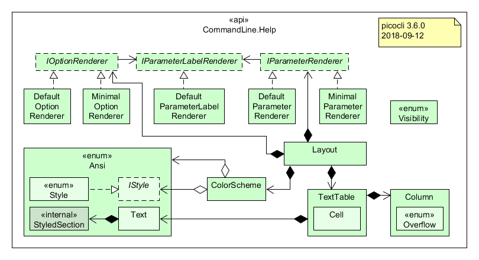

Class CommandLine.Help
- Enclosing class:
- CommandLine
public static class CommandLine.Help extends Object
Class Diagram of the CommandLine.Help API

Layered API
The CommandLine.Command annotation and the CommandLine.Model.UsageMessageSpec programmatic API equivalent
provide the easiest way to configure the usage help message. See
the Manual for details.
This Help class provides high-level functions to create sections of the usage help message and headings
for these sections. Instead of calling the CommandLine.usage(PrintStream, CommandLine.Help.ColorScheme)
method, application authors may want to create a custom usage help message by reorganizing sections in a
different order and/or adding custom sections.
Finally, the Help class contains inner classes and interfaces that can be used to create custom help messages.
IOptionRenderer and IParameterRenderer
Renders a field annotated with CommandLine.Option or CommandLine.Parameters to an array of CommandLine.Help.Ansi.Text values.
By default, these values are
- mandatory marker character (if the option/parameter is
required) - short option name (empty for parameters)
- comma or empty (empty for parameters)
- long option names (the parameter
labelfor parameters) - description
Other components rely on this ordering.
Layout
Delegates to the renderers to create CommandLine.Help.Ansi.Text values for the annotated fields, and uses a
CommandLine.Help.TextTable to display these values in tabular format. Layout is responsible for deciding which values
to display where in the table. By default, Layout shows one option or parameter per table row.
TextTable
Responsible for spacing out CommandLine.Help.Ansi.Text values according to the CommandLine.Help.Column definitions the table was
created with. Columns have a width, indentation, and an overflow policy that decides what to do if a value is
longer than the column's width.
Text
Encapsulates rich text with styles and colors in a way that other components like CommandLine.Help.TextTable are
unaware of the embedded ANSI escape codes.
-
Nested Class Summary
Nested Classes Modifier and Type Class Description static classCommandLine.Help.AnsiProvides methods and inner classes to support using ANSI escape codes in usage help messages.static classCommandLine.Help.ColorSchemeAll usage help message are generated with a color scheme that assigns certain styles and colors to common parts of a usage message: the command name, options, positional parameters and option parameters.static classCommandLine.Help.Columnstatic interfaceCommandLine.Help.IOptionRendererWhen customizing online help forOptiondetails, a customIOptionRenderercan be used to create textual representation of an Option in a tabular format: one or more rows, each containing one or more columns.static interfaceCommandLine.Help.IParameterRendererWhen customizing online help for positional parameters details, a customIParameterRenderercan be used to create textual representation of a Parameters field in a tabular format: one or more rows, each containing one or more columns.static interfaceCommandLine.Help.IParamLabelRendererWhen customizing online usage help for an option parameter or a positional parameter, a customIParamLabelRenderercan be used to render the parameter name or label to a String.static classCommandLine.Help.LayoutUse a Layout to format usage help text for options and parameters in tabular format.static classCommandLine.Help.TextTableResponsible for spacing outCommandLine.Help.Ansi.Textvalues according to theCommandLine.Help.Columndefinitions the table was created with.static classCommandLine.Help.VisibilityControls the visibility of certain aspects of the usage help message. -
Field Summary
Fields Modifier and Type Field Description CommandLine.Model.PositionalParamSpecAT_FILE_POSITIONAL_PARAMprotected static StringDEFAULT_COMMAND_NAMEConstant String holding the default program name, value defined inCommandLine.Model.CommandSpec.DEFAULT_COMMAND_NAME.protected static StringDEFAULT_SEPARATORConstant String holding the default string that separates options from option parameters, value defined inCommandLine.Model.ParserSpec.DEFAULT_SEPARATOR.CommandLine.Model.OptionSpecEND_OF_OPTIONS_OPTION -
Constructor Summary
Constructors Constructor Description Help(Object command)Constructs a newHelpinstance with a default color scheme, initialized from annotations on the specified class and superclasses.Help(Object command, CommandLine.Help.Ansi ansi)Constructs a newHelpinstance with a default color scheme, initialized from annotations on the specified class and superclasses.Help(Object command, CommandLine.Help.ColorScheme colorScheme)Help(CommandLine.Model.CommandSpec commandSpec, CommandLine.Help.ColorScheme colorScheme)Constructs a newHelpinstance with the specified color scheme, initialized from annotations on the specified class and superclasses. -
Method Summary
Modifier and Type Method Description StringabbreviatedSynopsis()Generates a generic synopsis like<command name> [OPTIONS] [PARAM1 [PARAM2]...], omitting parts that don't apply to the command (e.g., does not show [OPTIONS] if the command has no options).CommandLine.HelpaddAllSubcommands(Map<String,CommandLine> subcommands)Registers all specified subcommands with this Help.CommandLine.HelpaddSubcommand(String commandName, Object command)Deprecated.useaddAllSubcommands(Map)insteadprotected List<String>aliases()Returns the list of aliases for the command in this Help.Map<String,CommandLine.Help>allSubcommands()Returns the map of all subcommandHelpinstances (including hidden commands) for this command Help.CommandLine.Help.Ansiansi()Returns whether ANSI escape codes are enabled or not.StringatFileParameterList()Returns the section of the usage help message that lists the @-file and its description.CommandLine.Help.ColorSchemecolorScheme()Returns theColorSchememodel that this Help was constructed with.StringcommandList()Returns a 2-column list with the command names and first line of their header or (if absent) description of the commands returned bysubcommands().StringcommandList(Map<String,CommandLine.Help> subcommands)Returns a 2-column list with the command names and first line of their header or (if absent) description of the specified command map.StringcommandListHeading(Object... params)Returns the text displayed before the command list; an empty string if there are no commands, otherwise the result ofString.format(commandListHeading, params).CommandLine.Help.Ansi.TextcommandNamesText(String separator)Returns aTextobject containing the command name and all aliases, separated with the specified separator.CommandLine.Model.CommandSpeccommandSpec()Returns theCommandSpecmodel that this Help was constructed with.CommandLine.Help.LayoutcreateDefaultLayout()Returns aLayoutinstance configured with the user preferences captured in this Help instance.CommandLine.Help.LayoutcreateDefaultLayout(List<CommandLine.Model.OptionSpec> options, List<CommandLine.Model.PositionalParamSpec> positionals, CommandLine.Help.ColorScheme aColorScheme)Returns aLayoutinstance configured with the user preferences captured in this Help instance.CommandLine.Help.IOptionRenderercreateDefaultOptionRenderer()Comparator<CommandLine.Model.OptionSpec>createDefaultOptionSort()Returns a comparator for sorting options, ornull, depending on the settings for this command.CommandLine.Help.IParameterRenderercreateDefaultParameterRenderer()Returns a new default ParameterRenderer which converts positional parameters to four columns of text to match the default TextTable column layout.CommandLine.Help.IParamLabelRenderercreateDefaultParamLabelRenderer()Returns a new default param label renderer that separates option parameters from their option name with the specified separator string, and, unlessCommandLine.Model.ArgSpec.hideParamSyntax()is true, surrounds optional parameters with'['and']'characters and uses ellipses ("...") to indicate that any number of a parameter are allowed.protected CommandLine.Help.Ansi.TextcreateDetailedSynopsisCommandText()Returns a Text object containing a partial detailed synopsis showing only the subcommands, starting with a" "space.protected CommandLine.Help.Ansi.TextcreateDetailedSynopsisEndOfOptionsText()Returns a Text object containing a partial detailed synopsis showing only the end of options delimiter (if enabled), starting with a" "space.protected CommandLine.Help.Ansi.TextcreateDetailedSynopsisGroupsText(Set<CommandLine.Model.ArgSpec> outparam_groupArgs)Returns a Text object containing a partial detailed synopsis showing only the options and positional parameters in the specified validating groups, starting with a" "space.protected CommandLine.Help.Ansi.TextcreateDetailedSynopsisOptionsText(Collection<CommandLine.Model.ArgSpec> done, Comparator<CommandLine.Model.OptionSpec> optionSort, boolean clusterBooleanOptions)Returns a Text object containing a partial detailed synopsis showing only the options, starting with a" "space.protected CommandLine.Help.Ansi.TextcreateDetailedSynopsisOptionsText(Collection<CommandLine.Model.ArgSpec> done, List<CommandLine.Model.OptionSpec> optionList, Comparator<CommandLine.Model.OptionSpec> optionSort, boolean clusterBooleanOptions)Returns a Text object containing a partial detailed synopsis showing only the specified options, starting with a" "space.protected CommandLine.Help.Ansi.TextcreateDetailedSynopsisPositionalsText(Collection<CommandLine.Model.ArgSpec> done)Returns a Text object containing a partial detailed synopsis showing only the positional parameters, starting with a" "space.StringcreateHeading(String text, Object... params)Returns a String that can be used as a help section heading.static CommandLine.Help.IOptionRenderercreateMinimalOptionRenderer()Returns a new minimal OptionRenderer which convertsOptionsto a single row with two columns of text: an option name and a description.static CommandLine.Help.IParameterRenderercreateMinimalParameterRenderer()Returns a new minimal ParameterRenderer which converts positional parameters to a single row with two columns of text: an option name and a description.static CommandLine.Help.IParamLabelRenderercreateMinimalParamLabelRenderer()Returns a value renderer that returns theparamLabelif defined or the field name otherwise.static Comparator<CommandLine.Model.OptionSpec>createShortOptionArityAndNameComparator()static Comparator<CommandLine.Model.OptionSpec>createShortOptionNameComparator()SortsOptionSpecsby their option name in case-insensitive alphabetic order.CommandLine.Help.TextTablecreateTextTable(Map<?,?> map)Returns a 2-columnTextTablecontaining data from the specified map: the keys are put in the left column and the map values are in the right column.StringcustomSynopsis(Object... params)Returns command custom synopsis as a string.static CommandLine.Help.ColorSchemedefaultColorScheme(CommandLine.Help.Ansi ansi)Creates and returns a newCommandLine.Help.ColorSchemeinitialized with picocli default values: commands are bold, options and parameters use a yellow foreground, and option parameters use italic.Stringdescription(Object... params)Returns command description text as a string.StringdescriptionHeading(Object... params)Returns the text displayed before the description text; an empty string if there is no description, otherwise the result ofString.format(descriptionHeading, params).StringdetailedSynopsis(int synopsisHeadingLength, Comparator<CommandLine.Model.OptionSpec> optionSort, boolean clusterBooleanOptions)Generates a detailed synopsis message showing all options and parameters.StringdetailedSynopsis(Comparator<CommandLine.Model.OptionSpec> optionSort, boolean clusterBooleanOptions)Deprecated.usedetailedSynopsis(int, Comparator, boolean)instead.StringendOfOptionsList()Returns the section of the usage help message that lists the--End of Options delimiter and its description.StringexitCodeList()Returns a 2-column list with exit codes and their description.StringexitCodeListHeading(Object... params)Returns the text displayed before the exit code list text; the result ofString.format(exitCodeHeading, params).Stringfooter(Object... params)Returns command footer text as a string.StringfooterHeading(Object... params)Returns the text displayed before the footer text; the result ofString.format(footerHeading, params).StringfullSynopsis()Returns the full usage synopsis of this command.booleanhasAtFileParameter()Returns true if the usage help should show the at file parameter in the parameter list, otherwise false.Stringheader(Object... params)Returns the command header text as a string.StringheaderHeading(Object... params)Returns the text displayed before the header text; the result ofString.format(headerHeading, params).protected StringinsertSynopsisCommandName(int synopsisHeadingLength, CommandLine.Help.Ansi.Text optionsAndPositionalsAndCommandsDetails)Returns the detailed synopsis text by inserting the command name before the specified text with options and positional parameters details.static StringBuilderjoin(CommandLine.Help.Ansi ansi, int usageHelpWidth, boolean adjustCJK, String[] values, StringBuilder sb, Object... params)Formats each of the specified values and appends it to the specified StringBuilder.static StringBuilderjoin(CommandLine.Help.Ansi ansi, int usageHelpWidth, String[] values, StringBuilder sb, Object... params)Deprecated.protected StringmakeSynopsisFromParts(int synopsisHeadingLength, CommandLine.Help.Ansi.Text optionText, CommandLine.Help.Ansi.Text groupsText, CommandLine.Help.Ansi.Text endOfOptionsText, CommandLine.Help.Ansi.Text positionalParamText, CommandLine.Help.Ansi.Text commandText)Concatenates the command name and the specified synopsis parts and returns a fully rendered synopsis String.StringoptionList()Returns a description of all options in this command, including any argument groups.StringoptionList(CommandLine.Help.Layout layout, Comparator<CommandLine.Model.OptionSpec> optionSort, CommandLine.Help.IParamLabelRenderer valueLabelRenderer)Sorts allOptionswith the specifiedcomparator(if the comparator is non-null), then adds all non-hidden options to the specified TextTable and returns the result of TextTable.toString().StringoptionListExcludingGroups(List<CommandLine.Model.OptionSpec> options)Returns a description of the specified list of options.StringoptionListExcludingGroups(List<CommandLine.Model.OptionSpec> optionList, CommandLine.Help.Layout layout, Comparator<CommandLine.Model.OptionSpec> optionSort, CommandLine.Help.IParamLabelRenderer valueLabelRenderer)Sorts allOptionswith the specifiedcomparator(if the comparator is non-null), then adds the specified options to the specified TextTable and returns the result of TextTable.toString().StringoptionListGroupSections()Returns a rendered section of the usage help message that contains the argument groups that have a non-nullheading.StringoptionListHeading(Object... params)Returns the text displayed before the option list; an empty string if there are no options, otherwise the result ofString.format(optionListHeading, params).List<CommandLine.Model.ArgGroupSpec>optionSectionGroups()Returns the list ofArgGroupSpecinstances in this command that have a non-nullheading, most deeply nested argument groups first.CommandLine.Help.IParamLabelRendererparameterLabelRenderer()Option and positional parameter value label renderer used for the synopsis line(s) and the option list.StringparameterList()Returns the rendered positional parameters section of the usage help message for all positional parameters in this command.StringparameterList(List<CommandLine.Model.PositionalParamSpec> positionalParams)Returns the rendered positional parameters section of the usage help message for the specified positional parameters.StringparameterList(List<CommandLine.Model.PositionalParamSpec> positionalParams, CommandLine.Help.Layout layout, CommandLine.Help.IParamLabelRenderer paramLabelRenderer)Returns the rendered section of the usage help message that lists the specified parameters with their descriptions.StringparameterList(CommandLine.Help.Layout layout, CommandLine.Help.IParamLabelRenderer paramLabelRenderer)Returns the rendered section of the usage help message that lists all positional parameters in this command with their descriptions.StringparameterListHeading(Object... params)Returns the text displayed before the positional parameter list; an empty string if there are no positional parameters, otherwise the result ofString.format(parameterListHeading, params).static Comparator<String>shortestFirst()Sorts short strings before longer strings.Map<String,CommandLine.Help>subcommands()Returns the map of non-hidden subcommandHelpinstances for this command Help.Stringsynopsis()Deprecated.usesynopsis(int)insteadStringsynopsis(int synopsisHeadingLength)Returns a synopsis for the command, reserving the specified space for the synopsis heading.StringsynopsisHeading(Object... params)Returns the text displayed before the synopsis text; the result ofString.format(synopsisHeading, params).intsynopsisHeadingLength()Returns the number of characters the synopsis heading will take on the same line as the synopsis.
-
Field Details
-
DEFAULT_COMMAND_NAME
Constant String holding the default program name, value defined inCommandLine.Model.CommandSpec.DEFAULT_COMMAND_NAME.- See Also:
- Constant Field Values
-
DEFAULT_SEPARATOR
Constant String holding the default string that separates options from option parameters, value defined inCommandLine.Model.ParserSpec.DEFAULT_SEPARATOR.- See Also:
- Constant Field Values
-
AT_FILE_POSITIONAL_PARAM
-
END_OF_OPTIONS_OPTION
-
-
Constructor Details
-
Help
Constructs a newHelpinstance with a default color scheme, initialized from annotations on the specified class and superclasses.- Parameters:
command- the annotated object to create usage help for
-
Help
Constructs a newHelpinstance with a default color scheme, initialized from annotations on the specified class and superclasses.- Parameters:
command- the annotated object to create usage help foransi- whether to emit ANSI escape codes or not
-
Help
Constructs a newHelpinstance with the specified color scheme, initialized from annotations on the specified class and superclasses.- Parameters:
command- the annotated object to create usage help forcolorScheme- the color scheme to use
-
Help
Constructs a newHelpinstance with the specified color scheme, initialized from annotations on the specified class and superclasses.- Parameters:
commandSpec- the command model to create usage help forcolorScheme- the color scheme to use
-
-
Method Details
-
commandSpec
Returns theCommandSpecmodel that this Help was constructed with.- Since:
- 3.9
-
colorScheme
Returns theColorSchememodel that this Help was constructed with.- Since:
- 3.0
-
subcommands
Returns the map of non-hidden subcommandHelpinstances for this command Help.- Since:
- 3.9
- See Also:
allSubcommands()
-
allSubcommands
Returns the map of all subcommandHelpinstances (including hidden commands) for this command Help.- Since:
- 4.4
- See Also:
subcommands()
-
aliases
Returns the list of aliases for the command in this Help.- Since:
- 3.9
-
parameterLabelRenderer
Option and positional parameter value label renderer used for the synopsis line(s) and the option list. By default initialized to the result ofcreateDefaultParamLabelRenderer(), which takes a snapshot of theCommandLine.Model.ParserSpec.separator()at construction time. If the separator is modified after Help construction, you may need to re-initialize this field by callingcreateDefaultParamLabelRenderer()again. -
addAllSubcommands
Registers all specified subcommands with this Help.- Parameters:
subcommands- the subcommands of this command- Returns:
- this Help instance (for method chaining)
- See Also:
subcommands(),allSubcommands()
-
addSubcommand
Deprecated.useaddAllSubcommands(Map)insteadRegisters the specified subcommand as one of the visible commands in this Help. This method does not check whether the specified command is hidden or not.- Parameters:
commandName- the name of the subcommand to display in the usage messagecommand- theCommandSpecor@Commandannotated object to get more information from- Returns:
- this Help instance (for method chaining)
- See Also:
subcommands()
-
fullSynopsis
Returns the full usage synopsis of this command. This is equivalent to:this.synopsisHeading() + this.synopsis(this.synopsisHeadingLength())- Since:
- 4.1
-
synopsis
Deprecated.usesynopsis(int)insteadReturns a synopsis for the command without reserving space for the synopsis heading.- Returns:
- a synopsis
- See Also:
abbreviatedSynopsis(),detailedSynopsis(Comparator, boolean)
-
synopsis
Returns a synopsis for the command, reserving the specified space for the synopsis heading.- Parameters:
synopsisHeadingLength- the length of the synopsis heading that will be displayed on the same line- Returns:
- a synopsis
- See Also:
abbreviatedSynopsis(),detailedSynopsis(Comparator, boolean),synopsisHeading(java.lang.Object...)
-
abbreviatedSynopsis
Generates a generic synopsis like<command name> [OPTIONS] [PARAM1 [PARAM2]...], omitting parts that don't apply to the command (e.g., does not show [OPTIONS] if the command has no options).- Returns:
- a generic synopsis
-
detailedSynopsis
@Deprecated public String detailedSynopsis(Comparator<CommandLine.Model.OptionSpec> optionSort, boolean clusterBooleanOptions)Deprecated.usedetailedSynopsis(int, Comparator, boolean)instead.Generates a detailed synopsis message showing all options and parameters. Follows the unix convention of showing optional options and parameters in square brackets ([ ]).- Parameters:
optionSort- comparator to sort options ornullif options should not be sortedclusterBooleanOptions-trueif boolean short options should be clustered into a single string- Returns:
- a detailed synopsis
-
detailedSynopsis
public String detailedSynopsis(int synopsisHeadingLength, Comparator<CommandLine.Model.OptionSpec> optionSort, boolean clusterBooleanOptions)Generates a detailed synopsis message showing all options and parameters. Follows the unix convention of showing optional options and parameters in square brackets ([ ]).- Parameters:
synopsisHeadingLength- the length of the synopsis heading that will be displayed on the same lineoptionSort- comparator to sort options ornullif options should not be sortedclusterBooleanOptions-trueif boolean short options should be clustered into a single string- Returns:
- a detailed synopsis
- Since:
- 3.0
-
makeSynopsisFromParts
protected String makeSynopsisFromParts(int synopsisHeadingLength, CommandLine.Help.Ansi.Text optionText, CommandLine.Help.Ansi.Text groupsText, CommandLine.Help.Ansi.Text endOfOptionsText, CommandLine.Help.Ansi.Text positionalParamText, CommandLine.Help.Ansi.Text commandText)Concatenates the command name and the specified synopsis parts and returns a fully rendered synopsis String.- Parameters:
synopsisHeadingLength- length of the synopsis heading string to be displayed on the same line as the first synopsis line. For example, if the synopsis heading is"Usage: ", this value is 7.optionText- the Ansi.Text object with the rendered options list (excluding the argument groups)groupsText- the Ansi.Text object showing the rendered argument groupsendOfOptionsText- the Ansi.Text object containing the end of options delimiter (if enabled)positionalParamText- the Ansi.Text object showing the rendered positional parameterscommandText- the Ansi.Text object showing the subcommands part of the synopsis- Returns:
- a fully rendered synopsis String
- Since:
- 4.4
-
createDetailedSynopsisGroupsText
protected CommandLine.Help.Ansi.Text createDetailedSynopsisGroupsText(Set<CommandLine.Model.ArgSpec> outparam_groupArgs)Returns a Text object containing a partial detailed synopsis showing only the options and positional parameters in the specified validating groups, starting with a" "space.- Parameters:
outparam_groupArgs- all options and positional parameters in the groups this method generates a synopsis for; these options and positional parameters should be excluded from appearing elsewhere in the synopsis- Returns:
- the formatted groups synopsis elements, starting with a
" "space, or an empty Text if this command has no validating groups - Since:
- 4.0
-
createDetailedSynopsisOptionsText
protected CommandLine.Help.Ansi.Text createDetailedSynopsisOptionsText(Collection<CommandLine.Model.ArgSpec> done, Comparator<CommandLine.Model.OptionSpec> optionSort, boolean clusterBooleanOptions)Returns a Text object containing a partial detailed synopsis showing only the options, starting with a" "space. Follows the unix convention of showing optional options and parameters in square brackets ([ ]).- Parameters:
done- the list of options and positional parameters for which a synopsis was already generated. Options in this set should be excluded.optionSort- comparator to sort options ornullif options should not be sortedclusterBooleanOptions-trueif boolean short options should be clustered into a single string- Returns:
- the formatted options, starting with a
" "space, or an empty Text if this command has no named options - Since:
- 3.9
-
createDetailedSynopsisOptionsText
protected CommandLine.Help.Ansi.Text createDetailedSynopsisOptionsText(Collection<CommandLine.Model.ArgSpec> done, List<CommandLine.Model.OptionSpec> optionList, Comparator<CommandLine.Model.OptionSpec> optionSort, boolean clusterBooleanOptions)Returns a Text object containing a partial detailed synopsis showing only the specified options, starting with a" "space. Follows the unix convention of showing optional options and parameters in square brackets ([ ]).- Parameters:
done- the list of options and positional parameters for which a synopsis was already generated. Options in this set should be excluded.optionList- the list of options to include in the synopsisoptionSort- comparator to sort options ornullif options should not be sortedclusterBooleanOptions-trueif boolean short options should be clustered into a single string- Returns:
- the formatted options, starting with a
" "space, or an empty Text if this command has no named options - Since:
- 4.4
-
createDetailedSynopsisEndOfOptionsText
Returns a Text object containing a partial detailed synopsis showing only the end of options delimiter (if enabled), starting with a" "space. Follows the unix convention of showing optional options and parameters in square brackets ([ ]).- Returns:
- the formatted end of options delimiter, starting with a
" "space, or an empty Text if the end of options delimiter should not be shown - Since:
- 4.3
-
createDetailedSynopsisPositionalsText
protected CommandLine.Help.Ansi.Text createDetailedSynopsisPositionalsText(Collection<CommandLine.Model.ArgSpec> done)Returns a Text object containing a partial detailed synopsis showing only the positional parameters, starting with a" "space. Follows the unix convention of showing optional options and parameters in square brackets ([ ]).- Parameters:
done- the list of options and positional parameters for which a synopsis was already generated. Positional parameters in this set should be excluded.- Returns:
- the formatted positional parameters, starting with a
" "space, or an empty Text if this command has no positional parameters - Since:
- 3.9
-
createDetailedSynopsisCommandText
Returns a Text object containing a partial detailed synopsis showing only the subcommands, starting with a" "space. Follows the unix convention of showing optional elements in square brackets ([ ]).- Returns:
- this implementation returns " " +
CommandLine.Model.UsageMessageSpec.synopsisSubcommandLabel()if this command has subcommands, an empty Text otherwise. - Since:
- 3.9
-
insertSynopsisCommandName
protected String insertSynopsisCommandName(int synopsisHeadingLength, CommandLine.Help.Ansi.Text optionsAndPositionalsAndCommandsDetails)Returns the detailed synopsis text by inserting the command name before the specified text with options and positional parameters details.- Parameters:
synopsisHeadingLength- length of the synopsis heading string to be displayed on the same line as the first synopsis line. For example, if the synopsis heading is"Usage: ", this value is 7.optionsAndPositionalsAndCommandsDetails- formatted string with options, positional parameters and subcommands. Follows the unix convention of showing optional options and parameters in square brackets ([ ]).- Returns:
- the detailed synopsis text, in multiple lines if the length exceeds the usage width
-
synopsisHeadingLength
public int synopsisHeadingLength()Returns the number of characters the synopsis heading will take on the same line as the synopsis.- Returns:
- the number of characters the synopsis heading will take on the same line as the synopsis.
- See Also:
detailedSynopsis(int, Comparator, boolean)
-
createDefaultOptionSort
Returns a comparator for sorting options, ornull, depending on the settings for this command.- Returns:
- if sortOptions is selected,
return a comparator for sorting options based on their short name.
Otherwise, if any of the options has a non-default value for their order attribute,
then return a comparator for sorting options based on the order attribute.
Otherwise, return
nullto indicate that options should not be sorted. - Since:
- 4.4
-
optionList
Returns a description of all options in this command, including any argument groups.
This implementation sorts options alphabetically, and shows only the non-hidden options in a tabular format using the default renderer and default layout.
- Returns:
- the fully formatted option list, including any argument groups
- See Also:
optionListExcludingGroups(List),optionListGroupSections()
-
optionListExcludingGroups
Returns a description of the specified list of options.
This implementation sorts options alphabetically, and shows only the specified options in a tabular format using the default renderer and createDefaultLayout(List, List, ColorScheme) default layout}.
Argument groups are not rendered by this method.
- Parameters:
options- the options to display in the returned rendered section of the usage help message- Returns:
- the fully formatted portion of the option list for the specified options only (argument groups are not included)
- Since:
- 4.4
- See Also:
optionListExcludingGroups(List, Layout, Comparator, IParamLabelRenderer)
-
optionList
public String optionList(CommandLine.Help.Layout layout, Comparator<CommandLine.Model.OptionSpec> optionSort, CommandLine.Help.IParamLabelRenderer valueLabelRenderer)Sorts allOptionswith the specifiedcomparator(if the comparator is non-null), then adds all non-hidden options to the specified TextTable and returns the result of TextTable.toString().- Parameters:
layout- the layout responsible for rendering the option listvalueLabelRenderer- used for options with a parameter- Returns:
- the fully formatted option list, including any argument groups
- Since:
- 3.0
- See Also:
optionListExcludingGroups(List, Layout, Comparator, IParamLabelRenderer),optionListGroupSections()
-
optionListExcludingGroups
public String optionListExcludingGroups(List<CommandLine.Model.OptionSpec> optionList, CommandLine.Help.Layout layout, Comparator<CommandLine.Model.OptionSpec> optionSort, CommandLine.Help.IParamLabelRenderer valueLabelRenderer)Sorts allOptionswith the specifiedcomparator(if the comparator is non-null), then adds the specified options to the specified TextTable and returns the result of TextTable.toString(). Argument groups are not rendered by this method.- Parameters:
optionList- the options to show (this may be a subset of the options in this command); it is the responsibility of the caller to remove options that should not be displayedlayout- the layout responsible for rendering the option listvalueLabelRenderer- used for options with a parameter- Returns:
- the fully formatted portion of the option list for the specified options only (argument groups are not included)
- Since:
- 4.4
-
optionListGroupSections
Returns a rendered section of the usage help message that contains the argument groups that have a non-nullheading. This is usually shown below the "normal" options of the command (that are not in an argument group).- Returns:
- the fully formatted portion of the option list showing the argument groups
- Since:
- 4.4
- See Also:
optionList(),optionListExcludingGroups(List),optionSectionGroups()
-
optionSectionGroups
Returns the list ofArgGroupSpecinstances in this command that have a non-nullheading, most deeply nested argument groups first.- Since:
- 4.4
- See Also:
optionListGroupSections()
-
parameterList
Returns the rendered positional parameters section of the usage help message for all positional parameters in this command.- Returns:
- the section of the usage help message that lists the parameters
- See Also:
parameterList(List)
-
parameterList
Returns the rendered positional parameters section of the usage help message for the specified positional parameters.- Parameters:
positionalParams- the positional parameters to display in the returned rendered section of the usage help message; the caller is responsible for removing parameters that should not be displayed- Returns:
- the section of the usage help message that lists the parameters
- Since:
- 4.4
- See Also:
parameterList(List, Layout, IParamLabelRenderer)
-
parameterList
public String parameterList(CommandLine.Help.Layout layout, CommandLine.Help.IParamLabelRenderer paramLabelRenderer)Returns the rendered section of the usage help message that lists all positional parameters in this command with their descriptions.- Parameters:
layout- the layout to useparamLabelRenderer- for rendering parameter names- Returns:
- the section of the usage help message that lists the parameters
-
parameterList
public String parameterList(List<CommandLine.Model.PositionalParamSpec> positionalParams, CommandLine.Help.Layout layout, CommandLine.Help.IParamLabelRenderer paramLabelRenderer)Returns the rendered section of the usage help message that lists the specified parameters with their descriptions.- Parameters:
positionalParams- the positional parameters to display in the returned rendered section of the usage help message; the caller is responsible for removing parameters that should not be displayedlayout- the layout to useparamLabelRenderer- for rendering parameter names- Returns:
- the section of the usage help message that lists the parameters
- Since:
- 4.4
-
hasAtFileParameter
public boolean hasAtFileParameter()Returns true if the usage help should show the at file parameter in the parameter list, otherwise false.- Since:
- 4.3
-
atFileParameterList
Returns the section of the usage help message that lists the @-file and its description.- Returns:
- the section of the usage help message that lists the @-file and its description
- Since:
- 4.2
-
endOfOptionsList
Returns the section of the usage help message that lists the--End of Options delimiter and its description.- Returns:
- the section of the usage help message that lists the
--End of Options delimiter and its description. - Since:
- 4.3
-
join
@Deprecated public static StringBuilder join(CommandLine.Help.Ansi ansi, int usageHelpWidth, String[] values, StringBuilder sb, Object... params)Deprecated. -
join
public static StringBuilder join(CommandLine.Help.Ansi ansi, int usageHelpWidth, boolean adjustCJK, String[] values, StringBuilder sb, Object... params)Formats each of the specified values and appends it to the specified StringBuilder.- Parameters:
ansi- whether the result should contain ANSI escape codes or notusageHelpWidth- the width of the usage help messageadjustCJK- true if wide Chinese, Japanese and Korean characters should be counted as double the size of other characters for line-breaking purposesvalues- the values to format and append to the StringBuildersb- the StringBuilder to collect the formatted stringsparams- the parameters to pass to the format method when formatting each value- Returns:
- the specified StringBuilder
- Since:
- 4.0
-
customSynopsis
Returns command custom synopsis as a string. A custom synopsis can be zero or more lines, and can be specified declaratively with theCommandLine.Command.customSynopsis()annotation attribute or programmatically by setting the Help instance'scustomSynopsis(java.lang.Object...)field.- Parameters:
params- Arguments referenced by the format specifiers in the synopsis strings- Returns:
- the custom synopsis lines combined into a single String (which may be empty)
-
description
Returns command description text as a string. Description text can be zero or more lines, and can be specified declaratively with theCommandLine.Command.description()annotation attribute or programmatically by setting the Help instance'sdescription(java.lang.Object...)field.- Parameters:
params- Arguments referenced by the format specifiers in the description strings- Returns:
- the description lines combined into a single String (which may be empty)
-
header
Returns the command header text as a string. Header text can be zero or more lines, and can be specified declaratively with theCommandLine.Command.header()annotation attribute or programmatically by setting the Help instance'sheader(java.lang.Object...)field.- Parameters:
params- Arguments referenced by the format specifiers in the header strings- Returns:
- the header lines combined into a single String (which may be empty)
-
footer
Returns command footer text as a string. Footer text can be zero or more lines, and can be specified declaratively with theCommandLine.Command.footer()annotation attribute or programmatically by setting the Help instance'sfooter(java.lang.Object...)field.- Parameters:
params- Arguments referenced by the format specifiers in the footer strings- Returns:
- the footer lines combined into a single String (which may be empty)
-
headerHeading
Returns the text displayed before the header text; the result ofString.format(headerHeading, params).- Parameters:
params- the parameters to use to format the header heading- Returns:
- the formatted header heading
-
synopsisHeading
Returns the text displayed before the synopsis text; the result ofString.format(synopsisHeading, params).- Parameters:
params- the parameters to use to format the synopsis heading- Returns:
- the formatted synopsis heading
-
descriptionHeading
Returns the text displayed before the description text; an empty string if there is no description, otherwise the result ofString.format(descriptionHeading, params).- Parameters:
params- the parameters to use to format the description heading- Returns:
- the formatted description heading
-
parameterListHeading
Returns the text displayed before the positional parameter list; an empty string if there are no positional parameters, otherwise the result ofString.format(parameterListHeading, params).- Parameters:
params- the parameters to use to format the parameter list heading- Returns:
- the formatted parameter list heading
-
optionListHeading
Returns the text displayed before the option list; an empty string if there are no options, otherwise the result ofString.format(optionListHeading, params).- Parameters:
params- the parameters to use to format the option list heading- Returns:
- the formatted option list heading
-
commandListHeading
Returns the text displayed before the command list; an empty string if there are no commands, otherwise the result ofString.format(commandListHeading, params).- Parameters:
params- the parameters to use to format the command list heading- Returns:
- the formatted command list heading
-
footerHeading
Returns the text displayed before the footer text; the result ofString.format(footerHeading, params).- Parameters:
params- the parameters to use to format the footer heading- Returns:
- the formatted footer heading
-
exitCodeListHeading
Returns the text displayed before the exit code list text; the result ofString.format(exitCodeHeading, params).- Parameters:
params- the parameters to use to format the exit code heading- Returns:
- the formatted heading of the exit code section of the usage help message
- Since:
- 4.0
-
exitCodeList
Returns a 2-column list with exit codes and their description. Descriptions containing"%n"line separators are broken up into multiple lines.- Returns:
- a usage help section describing the exit codes
- Since:
- 4.0
-
createHeading
Returns a String that can be used as a help section heading. Embedded%nformat specifiers will be converted to platform-specific line breaks. Long lines will be wrapped on word boundaries to ensure they do not exceed the usage message width. Embedded@|style[,style] ...|@markup will be converted to Ansi escape codes when Ansi is enabled, and stripped out otherwise.- Parameters:
text- a printf-style format string that may one or more embedded format specifiersparams- optional parameters to use when formatting the specified text string- Returns:
- a help section heading String
- Since:
- 4.1
-
createTextTable
Returns a 2-columnTextTablecontaining data from the specified map: the keys are put in the left column and the map values are in the right column.The width of the left column is the width of the longest key, plus 3 for spacing between the columns.
All map entries are converted to Strings and any embedded
%nformat specifiers are converted to platform-specific line breaks. Long lines are wrapped on word boundaries to ensure they do not exceed the column width.Embedded
@|style[,style] ...|@markup will be converted to Ansi escape codes when Ansi is enabled, and stripped out otherwise.- Parameters:
map- the map to convert to aTextTable- Returns:
- a 2-column
TextTablecontaining data from the specified map - Since:
- 4.1
-
commandList
Returns a 2-column list with the command names and first line of their header or (if absent) description of the commands returned bysubcommands().- Returns:
- a usage help section describing the added commands
- See Also:
commandList(Map)
-
commandList
Returns a 2-column list with the command names and first line of their header or (if absent) description of the specified command map.- Returns:
- a usage help section describing the added commands
- Since:
- 4.4
- See Also:
subcommands(),allSubcommands()
-
commandNamesText
Returns aTextobject containing the command name and all aliases, separated with the specified separator. Command names will use thecommand stylefor the color scheme of this Help.- Since:
- 3.9
-
createDefaultLayout
Returns aLayoutinstance configured with the user preferences captured in this Help instance.- Returns:
- a Layout
-
createDefaultLayout
public CommandLine.Help.Layout createDefaultLayout(List<CommandLine.Model.OptionSpec> options, List<CommandLine.Model.PositionalParamSpec> positionals, CommandLine.Help.ColorScheme aColorScheme)Returns aLayoutinstance configured with the user preferences captured in this Help instance.- Parameters:
options- used to calculate the long options column width in the layoutpositionals- used to calculate the long options column width in the layoutaColorScheme- used in the layout to create CommandLine.Help.Ansi.Text values- Returns:
- a Layout with the default columns
- Since:
- 4.4
-
createDefaultOptionRenderer
Returns a new default OptionRenderer which convertsOptionsto five columns of text to match the default TextTable column layout. The first row of values looks like this:- the required option marker
- 2-character short option name (or empty string if no short option exists)
- comma separator (only if both short option and long option exist, empty string otherwise)
- comma-separated string with long option name(s)
- first element of the
CommandLine.Model.ArgSpec.description()array
Following this, there will be one row for each of the remaining elements of the
CommandLine.Model.ArgSpec.description()array, and these rows look like{"", "", "", "", option.description()[i]}.If configured, this option renderer adds an additional row to display the default field value.
- Returns:
- a new default OptionRenderer
-
createMinimalOptionRenderer
Returns a new minimal OptionRenderer which convertsOptionsto a single row with two columns of text: an option name and a description. If multiple names or descriptions exist, the first value is used.- Returns:
- a new minimal OptionRenderer
-
createDefaultParameterRenderer
Returns a new default ParameterRenderer which converts positional parameters to four columns of text to match the default TextTable column layout. The first row of values looks like this:- empty string
- empty string
- parameter(s) label as rendered by the
CommandLine.Help.IParamLabelRenderer - first element of the
CommandLine.Model.ArgSpec.description()array
Following this, there will be one row for each of the remaining elements of the
CommandLine.Model.ArgSpec.description()array, and these rows look like{"", "", "", param.description()[i]}.If configured, this parameter renderer adds an additional row to display the default field value.
- Returns:
- a new default ParameterRenderer
-
createMinimalParameterRenderer
Returns a new minimal ParameterRenderer which converts positional parameters to a single row with two columns of text: an option name and a description. If multiple descriptions exist, the first value is used.- Returns:
- a new minimal ParameterRenderer
-
createMinimalParamLabelRenderer
Returns a value renderer that returns theparamLabelif defined or the field name otherwise.- Returns:
- a new minimal ParamLabelRenderer
-
createDefaultParamLabelRenderer
Returns a new default param label renderer that separates option parameters from their option name with the specified separator string, and, unlessCommandLine.Model.ArgSpec.hideParamSyntax()is true, surrounds optional parameters with'['and']'characters and uses ellipses ("...") to indicate that any number of a parameter are allowed.- Returns:
- a new default ParamLabelRenderer
-
createShortOptionNameComparator
SortsOptionSpecsby their option name in case-insensitive alphabetic order. If an option has multiple names, the shortest name is used for the sorting. Help options follow non-help options.- Returns:
- a comparator that sorts OptionSpecs by their option name in case-insensitive alphabetic order
-
createShortOptionArityAndNameComparator
- Returns:
- a comparator that sorts OptionSpecs by arity first, then their option name
-
shortestFirst
Sorts short strings before longer strings.- Returns:
- a comparators that sorts short strings before longer strings
-
ansi
Returns whether ANSI escape codes are enabled or not.- Returns:
- whether ANSI escape codes are enabled or not
-
defaultColorScheme
Creates and returns a newCommandLine.Help.ColorSchemeinitialized with picocli default values: commands are bold, options and parameters use a yellow foreground, and option parameters use italic.- Parameters:
ansi- whether the usage help message should contain ANSI escape codes or not- Returns:
- a new default color scheme
-